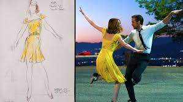

Amor, música, giros, saltos, colores, vestidos, todo está presente en la multinominada La La Land. La película dirigida por Damien Chazelle está en boca de todos por diversos motivos: los movimientos de cámara, las coreografías, Emma Stone, Ryan Goslin, el soundtrack y por supuesto, el vestuario.
Esta cinta está llena de guiños a la época dorada de Hollywood. Es un homenaje a la historia del cine, pero también de la moda. Algo así como correr en un museo y que no te importen los letreros de “NO TOCAR”, aunque claro, cuidando mucho todo.
El mismo Chazelle dijo en una entrevista que el vestuario era fundamental para la construcción de la historia, pues “acentúa la belleza de la imagen”. La encargada de vestir a Mía y Sebastián fue Mary Zophres. No te espantes con el nombre, en realidad has visto su trabajo en películas como Loco por Mary (1998), Atrápame, si puedes (2002); La terminal (2004), Indiana Jones y el reino de la calavera de cristal (2008); Iron Man 2 (2010), Interestelar (2014), entre muchas otras.
La ropa que usan los protagonistas es de suma importancia, pues ayuda a construir su identidad. Asimismo, el vestuario forma parte del lenguaje visual con que se desarrolla la historia. Apoya la idea de una historia fantástica, nostálgica, pero real.
Como siempre, el vestuario femenino es el centro de atención: para que no se quejen cuando su novia se tarda mucho en arreglar. Ya mucho se ha hablado de cómo el estilo de Grace Kelly, Catherine Denevue e Ingrid Bergman fue la principal inspiración para crear el guardarropa de Mía. Pero para comprender la importancia de la ropa como parte del lenguaje visual, es importante analizar la forma y los colores.

Al principio del filme, Mía utiliza colores saturados, estridentes, alegres y vibrantes. El mejor ejemplo es el vestido amarillo con que canta Lovely night (el del póster de la película). El color amarillo simboliza la felicidad y alegría. Las telas tienen vuelo, los cortes son poco estructurados. Utiliza faldas tipo evasé. O sea, son vestidos con mucho movimiento. De los que cuando das vueltas, se levantan. Esto da un aire infantil, inocente e incluso ingenuo. Tal como es Mía al principio de la historia.
Conforme pasa el tiempo, Mía madura y los colores de su ropa se vuelven menos brillantes. Si en Lovely night usa una combinación de colores primarios: vestido amarillo, bolso rojo, y zapatos azules. Color, color, color; sin embargo, cuando Mía presenta su monólogo, el traje que usa es solo blanco con negro.
Ya ni hablar del final. Cuando ella es una famosa actriz y llega a la cafetería, su vestido es mucho más estructurado y ceñido al cuerpo. La paleta de colores que utiliza cambia radicalmente a blanco y negro. Si antes casi no usaba tacones, salvo en la fiesta, ahora lleva unos stilettos negros. Estos zapatos se caracterizan por ser de tacón muy delgado y alto, son muy difíciles de usar. Símbolo de elegancia, clase, madurez y distinción.
Como consejo: si es la primera vez que utilizas zapatos de tacón, evita utilizar de estos o te va a besar el diablo. El vestido con que termina la historia resume todo. De nuevo, un corte estructurado, con escote cuadrado. Incluso luce más sensual que sus vestidos del inicio. Todo en un solo color.
El vestuario es un signo que, analizado con calma, puede decirnos mucho de la historia. No sólo para Mía y Sebastián, la ropa puede funcionar en cualquiera de nosotros. Por eso, la próxima vez que tengas una entrevista o incluso una primera cita, piensa bien lo que te vas a poner.